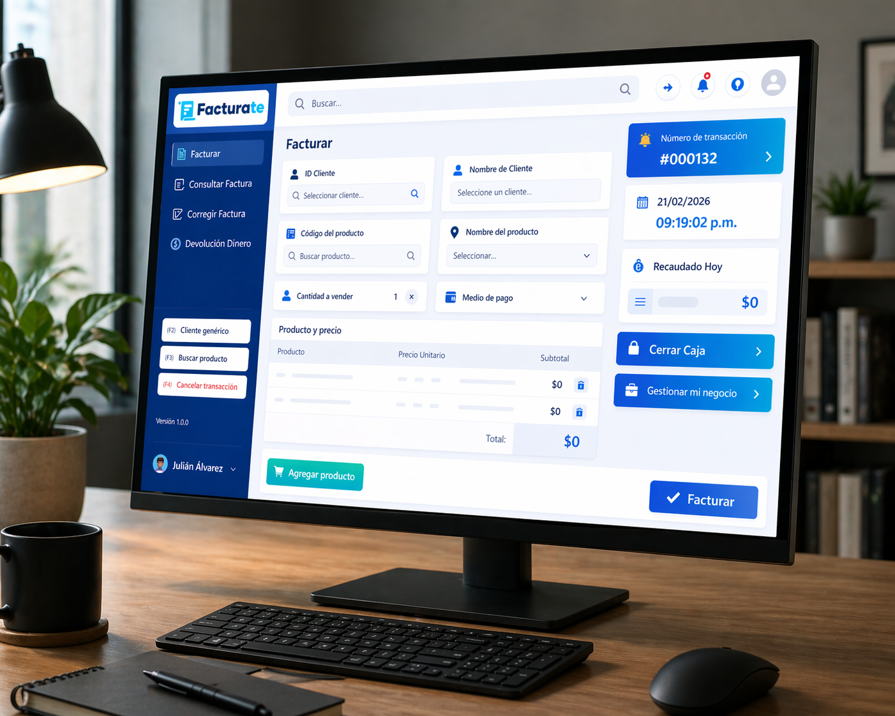

Funciona sin conexión permanente a internet
"Digitalízate, no te confíes"
Gestión digital simple para pequeños negocios
Facturate es una herramienta de recaudo digital diseñada para microempresas y negocios minoristas. Registra ventas, genera facturas PDF, controla inventario y gestiona clientes desde tu computador, incluso con conexión limitada a internet.
Fácil de usar
Datos seguros

Todo lo que necesitas para gestionar tu negocio
Digitaliza procesos que tradicionalmente se realizan en papel o de forma manual mediante una solución accesible, sencilla y eficiente.
Facturación digital
Genera facturas en formato PDF, imprímelas o almacénalas en la base de datos.
Gestión de inventario
Controla productos y servicios, consulta cantidades disponibles y mantén actualizado el inventario.
Clientes y Reportes
Registra clientes y consulta reportes para tomar decisiones estratégicas.
Pensado para el día a día del negocio
Menos papeles sueltos y más control sobre lo que entra y sale.
Ventas rápidas
Registra operaciones frecuentes mediante campos simples y fáciles de completar.
Acceso a la información
Consulta información importante incluso con conexión inestable.
Control preciso
Lleva un control preciso de cuentas, clientes e inventario.
Comienza a digitalizar tu negocio hoy mismo.
Deja atrás los registros en papel y las hojas de cálculo desorganizadas. Facturate te ayuda a llevar un control profesional de tu negocio desde un solo lugar.
- Genera facturas en PDF listas para imprimir o guardar
- Realiza cuadres de caja precisos y rápidos
- Consulta ventas y productos en cualquier momento
- Funciona sin conexión permanente a internet
¿Listo para empezar?
Únete a cientos de pequeños negocios que ya están gestionando sus operaciones con Facturate.
Crear cuenta